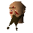

Combat Instructor

| Config name | newbie_combat_instructor |
| NPC id | 944 |
| Combat level | 146 |
| Options | Talk-to |
| Wander range | 2 tiles from spawn |
| Defined in | scripts/tutorial/configs/tutorial.npc |
Combat Instructor
An expert on all forms of combat.
Show all 1 spawn on the world map → Open in knowledge graph →
Locations
| Area | Coordinates | Level | Count | Map |
|---|---|---|---|---|
| Tutorial Island (underground) | 3106, 9509 | 0 | 1 | view |
Dialogue
PlayerHi! My name's .
Combat InstructorDo I look like I care? To me you're just another newcomer who thinks they're ready to fight.
Combat InstructorI am Vannaka, the greatest swordsman alive.
Combat InstructorLet's get started by teaching you to wield a weapon.
Combat InstructorVery good, but that little butter knife isn't going to protect you much. Here, take these.
Combat InstructorLet's get you equipped.
Combat InstructorYou should check out the combat interface.
Combat InstructorTime for some actual combat! Head into the pen and kill one of those rats.
PlayerI did it! I killed a Giant Rat!
Combat InstructorI saw . You seem better at this than I at first took you for. Well, you seem to have the hang of basic swordplay. Let's move on.
Combat InstructorLet's try some ranged attacking, with this you can kill foes from a distance. Also foes unable to reach you are as good as dead. You'll be able to attack the rats without entering the pit.
Combat InstructorUse your bow and arrows to kill one of those rats from outside the pen.
Combat InstructorWhat now?
PlayerTell me about combat stats again.
Combat InstructorCertainly. You have three main combat stats: Strength, Defence and Attack.
Combat InstructorStrength determines the maximum hit you will be able to deal with your blows, Defence determines the amount of damage you will be able to defend and Attack determines the accuracy of your blows.
Combat InstructorOther stats are used in combat such as Prayer, Hitpoints, Magic and Ranged. All of these stats can go towards determining your Combat level, which is shown at the bottom of your skills interface.
Combat InstructorYou will find out on the mainland that certain items can also affect your stats. There are potions that can be drunk that can alter your stats temporarily, such as raising Strength.
Combat InstructorYou will also raise your Defence and Attack values by using different weapons and armours.
Combat InstructorBefore going into combat with an opponent it is wise to put the mouse over them and see what combat level they are.
Combat InstructorGreen coloured writing usually means it will be an easy fight for you, red means you will probably lose, yellow means they are around your level and orange means they are slightly stronger.
Combat InstructorSometimes things will go your way, sometimes they won't. There is no such thing as a guaranteed win, but if the odds are on your side, you stand the best chance of walking away victorious.
Combat InstructorNow, was there something else you wanted to hear about again?
PlayerTell me about melee combat again.
Combat InstructorAh, my specialty. Close combat fighting, which is also known as melee fighting, covers all combat done at close range to your opponent.
Combat InstructorMelee fighting depends entirely upon your three basic combat stats: Attack, Defence and Strength.
Combat InstructorAlso, of course, it depends on the quality of your armour and weaponry. A high-levelled fighter with good armour and weapons will be deadly up close.
Combat InstructorIf this is the path you wish to take, remember your success depends on getting as close to your enemy as quickly as possible.
Combat InstructorPersonally, I consider the fine art of melee combat to be the only combat method worth using.
Combat InstructorNow, did you want to hear anything else?
PlayerTell me about ranged combat again.
Combat InstructorThinking of being a ranger, eh? Well, okay. I don't enjoy it myself, but I can see the appeal.
Combat InstructorRanging employs a lot of different weapons as a skill, not just the shortbow you have there. Spears, throwing knives, and crossbows are all used best at a distance from your enemy.
Combat InstructorNow, those rats were easy pickings, but on the mainland you will be very lucky if you can find a spot where you can shoot at your enemies without them being able to retaliate.
Combat InstructorAt close range, rangers often do badly in combat. Your best tactic as a ranger is to hit and run, keeping your foe at a distance.
Combat InstructorYour effectiveness as a ranger is almost entirely dependent on your Ranged stat. As with all skills, the more you train it, the more powerful it will become.
Combat InstructorAnything else you wanted to know?
PlayerNope, I'm ready to move on!
Combat InstructorOk then, .
Referenced in scripts
scripts/tutorial/scripts/guides/combat_instructor.rs2scripts/tutorial/scripts/tut_doors_and_gates.rs2